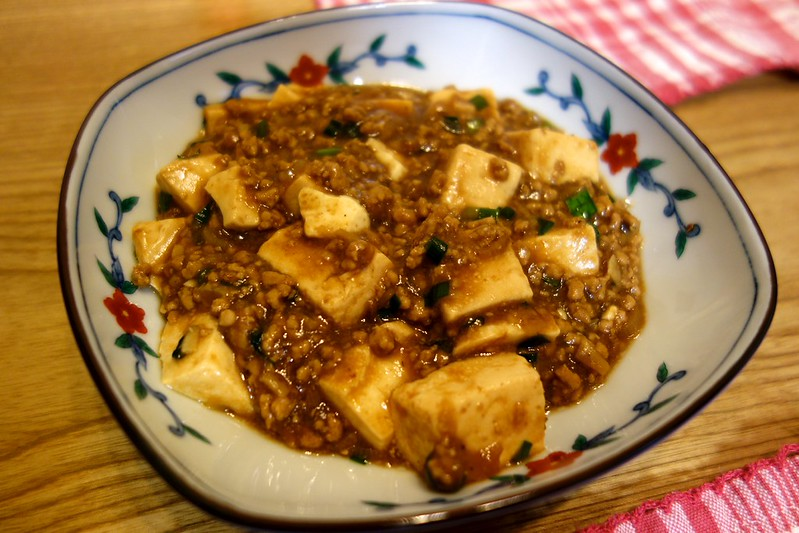

Home
Mapo Tofu (麻婆豆腐)

Photo shot by pelican
Description :
Mapo Tofu is a popular Chinese dish from Sichuan Province, where spicy food is king and the signature spice of the region––the Sichuan Peppercorn––gives dishes a unique “numbing” effect. It’s almost like the Sichuan peppercorns are there to not only add their fragrance and flavor, but also to numb your tongue so it can take more heat!
Ingredients :
- Tofu
- Doubanjiang
- Sichuan peppercorn
- Chili oil
- Pork
Steps :
- Fry the Sichuan peppercorns in the oil to infuse the aroma.
- Cook the ground pork with doubanjiang.Once the pork is cooked, add the green onions and stir a few times.
- Add the broth, tofu cubes, and braise with the cover on.
- Drizzle in the cornstarch mixture to thicken the sauce. Sprinkle with scallion greens for garnish.